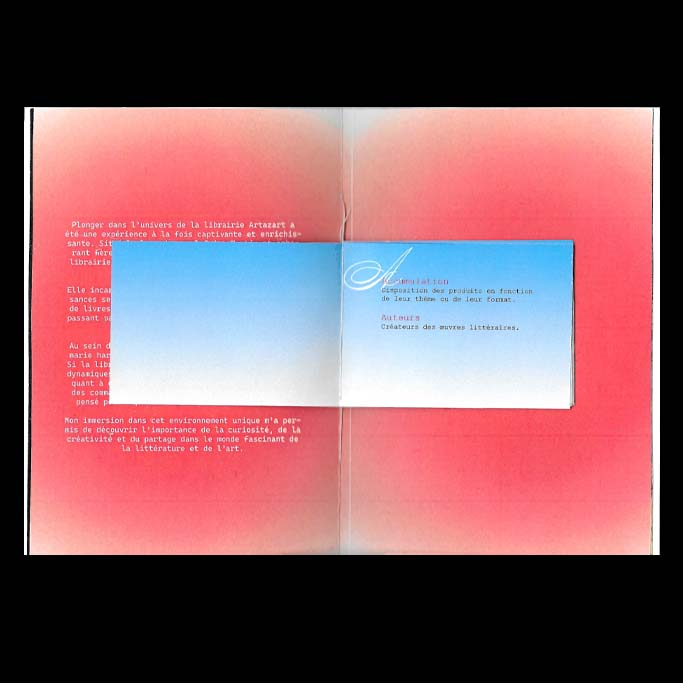
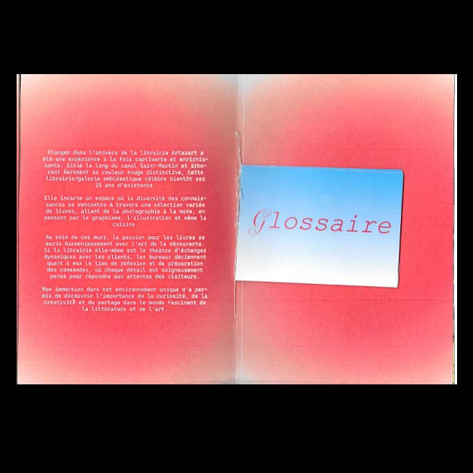
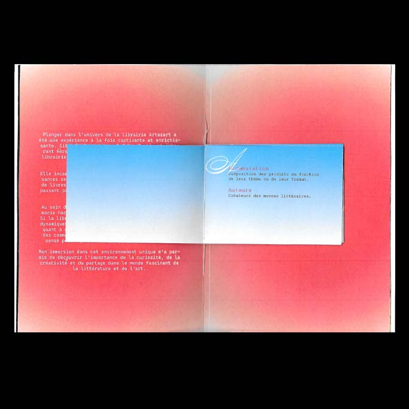
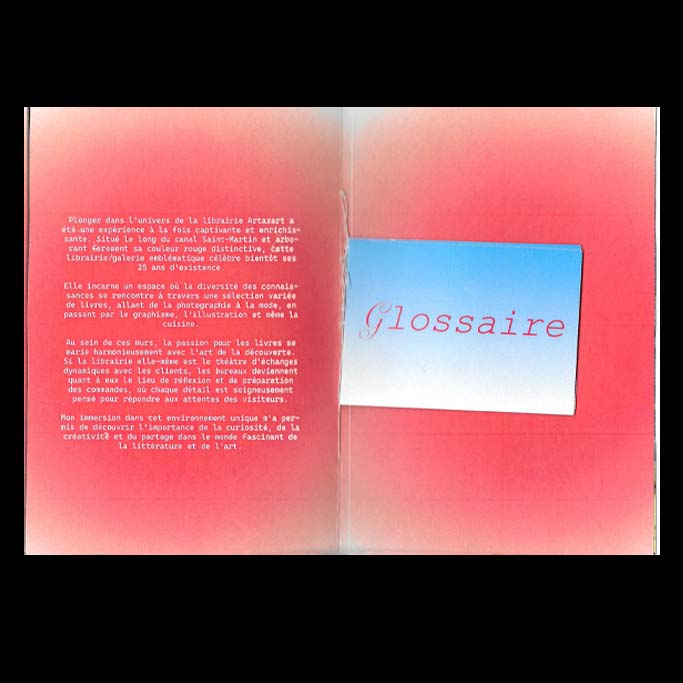
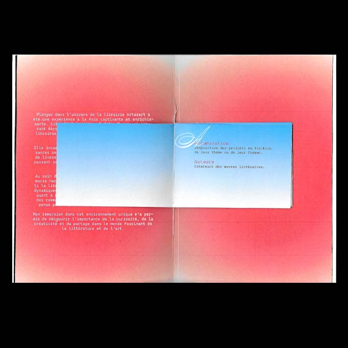
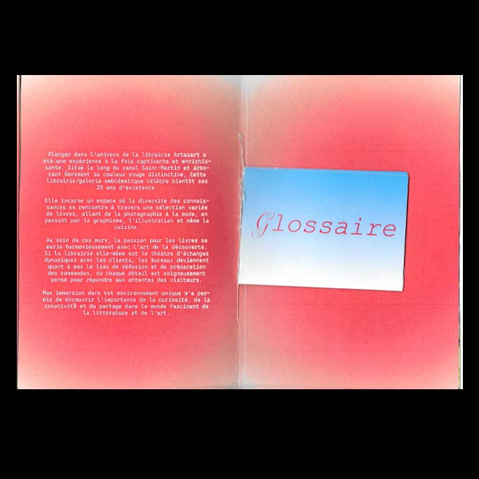

Création d’un glossaire de stage visant à représenter et définir l’univers de la librairie indépendante Artazart. J’ai conçu ce glossaire sous la forme d’une pochette kraft, rappelant un porte-documents, contenant divers éléments marquants de mon expérience : photos, stickers, flyers, ainsi que ma lettre de motivation. Cette démarche symbolise un regroupement de souvenirs et d’éléments graphiques qui témoignent de l’identité singulière de ce lieu et de son influence sur mon parcours.

